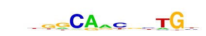

| p-value: | 1e-388 |
| log p-value: | -8.946e+02 |
| Information Content per bp: | 1.750 |
| Number of Target Sequences with motif | 867.0 |
| Percentage of Target Sequences with motif | 5.12% |
| Number of Background Sequences with motif | 260.6 |
| Percentage of Background Sequences with motif | 0.81% |
| Average Position of motif in Targets | 57.2 +/- 27.1bp |
| Average Position of motif in Background | 69.4 +/- 40.8bp |
| Strand Bias (log2 ratio + to - strand density) | 2.4 |
| Multiplicity (# of sites on avg that occur together) | 1.03 |
| Motif File: | file (matrix) reverse opposite |
| Rank | Match Score | Redundant Motif | P-value | log P-value | % of Targets | % of Background | Motif file |
| 1 | 0.708 |  | 1e-338 | -778.711215 | 5.12% | 0.95% | motif file (matrix) |
| 2 | 0.933 | 1e-281 | -647.325445 | 6.48% | 1.78% | motif file (matrix) | |
| 3 | 0.759 | 1e-263 | -606.240577 | 5.37% | 1.32% | motif file (matrix) | |
| 4 | 0.904 | 1e-216 | -497.898290 | 7.31% | 2.62% | motif file (matrix) | |
| 5 | 0.823 | 1e-152 | -350.371623 | 13.92% | 7.92% | motif file (matrix) | |
| 6 | 0.799 | 1e-97 | -224.950585 | 4.44% | 1.87% | motif file (matrix) | |
| 7 | 0.710 | 1e-81 | -187.449740 | 48.39% | 41.09% | motif file (matrix) | |
| 8 | 0.632 | 1e-59 | -136.394695 | 7.62% | 4.74% | motif file (matrix) |